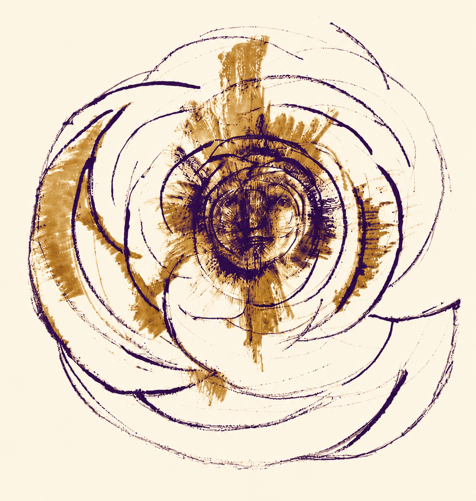

"What at first may look like repetition is, on closer attention, refinement: each recurrence presents the matter with greater precision." — Dr Adnan Al-Adnani
"I have believed in the Owner of sovereignty and dominion, submitted to the Possessor of might and majesty, and relied upon the Ever-Living who does not die — the Lord singular in oneness, without associate, the Living, the Almighty, exalted above all need. I bear witness to God's necessary existence, the fountain of generosity and bounty, by the unity that admits no division, by the Ever-Self-Sufficient One whose oneness has no before or after, and by the simple divinity in which all dominion and all creatures reside." — al-Ḥāfiẓ Rajab al-Barsī
A friend introduced me to a great teacher with whom his family was connected. We spent many months visiting this man and learning from him. I remember coming back to Johannesburg after one trip and talking with my friend's mom. I asked her what she thought of Shaykh Fadhlalla. Her response was warm, though she noted that he tended to repeat himself a lot.
"Once you know him, it's just the same thing over and over again in slightly different ways" she said. I remember thinking that this was both funny and revealing. Funny because it is true, and revealing because it shows that part of human nature which is wired to seek out novelty, to always want more. But there is no more news: that is the whole premise of the teaching. Now, it is for each human soul to live it.
I've been reading my old work, in particular a book I first published on the Bitcoin blockchain in 2015 called Roadtrips & Recollections. It turns out that what's in there is the same thing as what is in all the Blue Books. I'm also repetitive. And what a joy it is! I keep surrendering to my soul's command. Here is a piece from that book which may as well be in this chapter, called "Life's Song":
Of death
I remember nothing,
the deep time where
separation is no thing
womb of all creation
plus heaven and hell beside.
Yet, strange! I hear
those billion billion voices:
We have the world while
we still have life.
Life is in the singing
of it
but it is bent and twisted
in this world
by grief, or want, or longing,
lonely stirrings of desire
to move the song along:
Whatever tune you play,
love,
this is the way.
For there is music in
the queerest things
and laughter in all
our tragedies, visions
of uncapturable beauty
and beyond,
that other voice,
triumphant:
If there is paradise on Earth,
is is here, it is here, it is here!